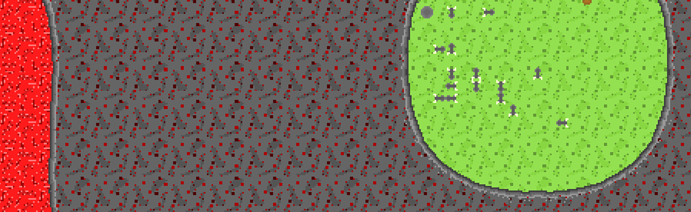
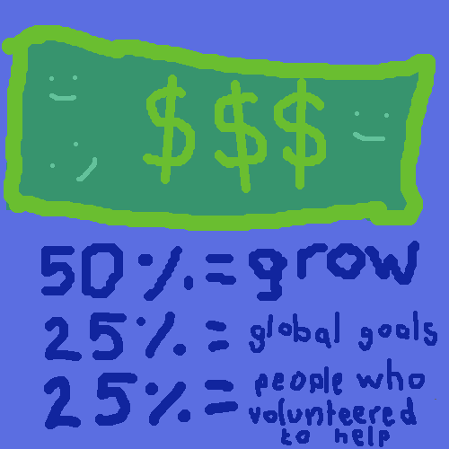

<div class="container mt-5 mx-5">
    <h1 class="circle7">Finance</h1>
    <p class="lightGrey">
        The game will cost 20€ and is at the moment not available. 
    </p>
    
    <p class="lightGrey">
        As shown in the picture, the income of chaoslands will be split into three parts.
    </p>
    <p class="lightGrey">
      <label style="font-weight: bold;">
        #1
      </label>
      10€ of the income will be used to to finance my life.
      This also will be used to pay external desingers, music producers, pay taxes and everything else.
    </p>
    <p class="lightGrey">
      <label style="font-weight: bold;">
        #2
      </label>
      5€ of every sold copy will be split to the people who volunteered to helpe creating the game.
      The formular that calculates your earned money if you created for example 3 sprites will be appear here.
    </p>
    <p class="lightGrey">
      <label style="font-weight: bold;">
        #3
      </label>
      Also 5€ of every bought game will go to a company that works for the global goals.
      The supported companys are currently "Plan International" and "Deutsche Welthungershilfe e.V.". </p>
      
    <h1 class="circle7">Buy</h1>
    <p class="lightGrey">
    Game is still in Pre-Alpha and hasnt been finished at all. If you still want to
     try some features send a Mail to FehlalarmMC@gmx.de and you will receive all information you want and need.
    You will always have access to the newest version of the game to goof around.
  </p>
  <h1 class="circle7">Sold copies</h1>
  <label style="font-weight: bold;">
    0
  </label>
  </div>
